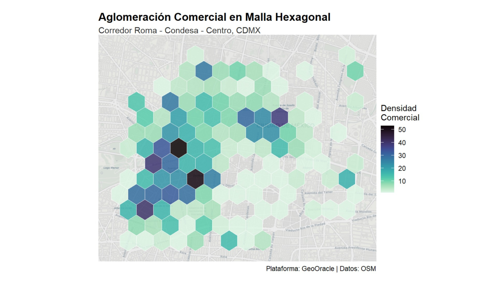

Bootcamp 1 a 1: De la visualización descriptiva con PostGIS a la inferencia causal aplicada en Python y R.
Has llegado a un punto en tu trayectoria donde mapear la realidad ya no es suficiente; el siguiente nivel exige probar matemáticamente cómo esa realidad se transforma y reacciona ante choques externos.
Tu intuición analítica es tu mayor activo. Entiendes perfectamente que los proyectos de infraestructura, los desplazamientos por gentrificación y la dinámica comercial no ocurren en el vacío geográfico. Sin embargo, las herramientas tradicionales limitan tu investigación a hacer mapas descriptivos. Te dicen dónde están las cosas, pero no te permiten probar por qué suceden ni cómo se contagian espacialmente.
El objetivo de esta inmersión tecnológica es darte la arquitectura para que pases de la observación a la predicción causal.
Para ilustrar este salto metodológico, modelaremos la dinámica comercial de la CDMX. No asumiremos la presión urbana por juicio experto; extraeremos datos espaciales y construiremos una matriz de pesos espaciales ($W$) para cuantificar el Efecto Derrame (Spatial Spillover) desde los corredores centrales de alta densidad (Roma-Condesa) hasta los nodos poblacionales de mayor peso en el oriente (Iztapalapa).
$$ y = \rho W y + X \beta + \epsilon $$
Donde ρ captura la intensidad del contagio espacial y W define la topología de la red urbana.
Ingeniería de Características Espaciales (Pipeline en R)
library(osmdata)
library(sf)
library(spdep) # Para matrices de pesos espaciales
# 1. Extracción de infraestructura y nodos de demanda
bbox_cdmx <- c(xmin = -99.20, ymin = 19.30, xmax = -99.00, ymax = 19.50)
query_osm <- opq(bbox = bbox_cdmx) %>%
add_osm_feature(key = "amenity", value = "restaurant") %>%
osmdata_sf()
puntos_comerciales <- query_osm$osm_points
# 2. Construcción de topología y matriz de rezago
malla_hex <- st_make_grid(puntos_comerciales, cellsize = 0.005, square = FALSE) %>% st_sf()
malla_hex$densidad <- lengths(st_intersects(malla_hex, puntos_comerciales))
# Generación de la Matriz W (Vecindad Reina)
vecinos <- poly2nb(malla_hex, queen = TRUE)
W_matrix <- nb2listw(vecinos, style = "W", zero.policy = TRUE)
Rechazo de la hipótesis nula de aleatoriedad espacial. El polo central genera un campo gravitacional que eleva el valor del suelo y desplaza las fronteras comerciales.
Una currícula intensiva de 12 semanas dividida en Sprints. Cada línea de código y cada query de PostgreSQL que ejecutes estará conectada directamente a tu investigación.
Despliegue de bases de datos espaciales con PostGIS. Limpieza paramétrica, proyecciones geométricas y manejo eficiente de grandes volúmenes de datos.
Definición de contigüidad (Reina/Torre), cálculo de matrices de pesos y pruebas formales de autocorrelación espacial (Índice de Moran local y global).
Estimación de Modelos de Rezago y Error Espacial. Interpretación de impactos directos, indirectos (spillovers) y totales en ecosistemas urbanos.
Regresión Geográficamente Ponderada (GWR) para entender la heterogeneidad espacial. Cierre con un modelo matemático irrefutable de tu autoría.
Al terminar este programa, entregarás un modelo econométrico robusto que demuestre cuantitativamente el impacto territorial de la ciudad sobre sus sistemas socioeconómicos y ecológicos.